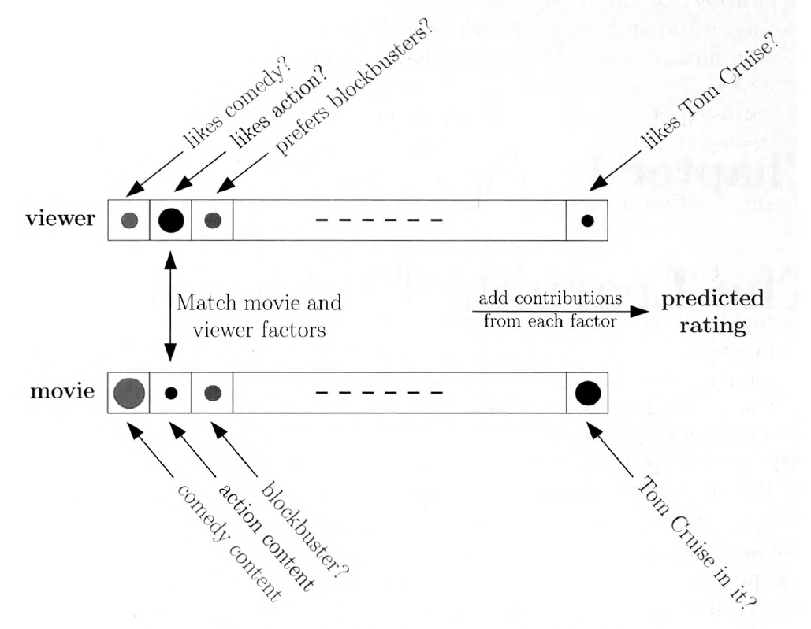
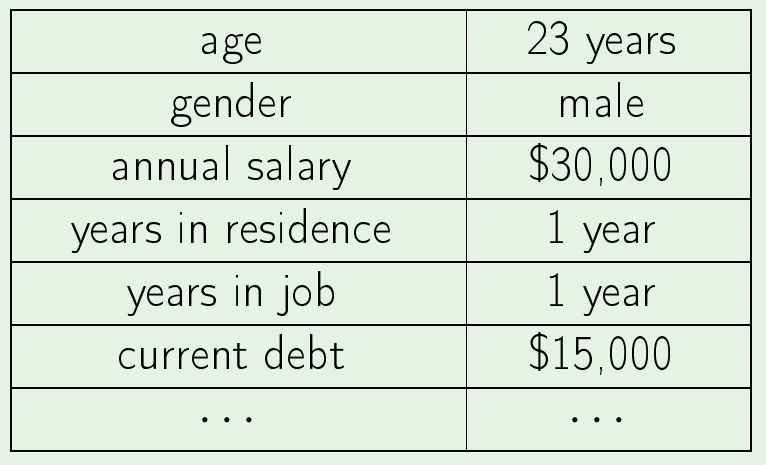
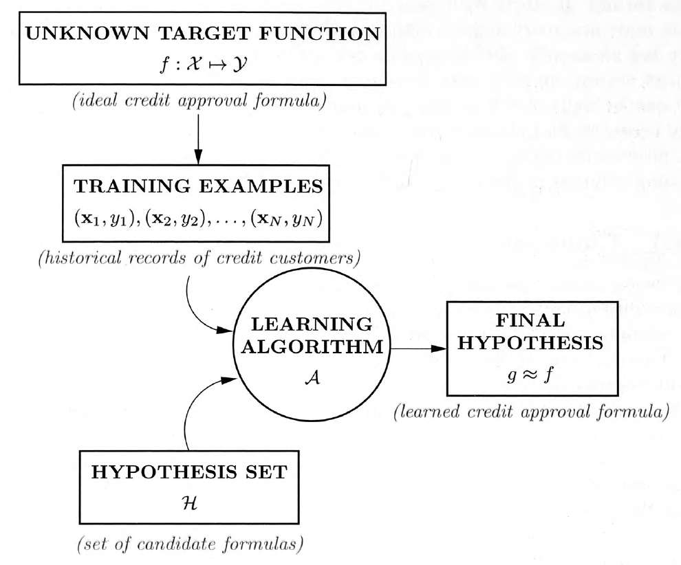
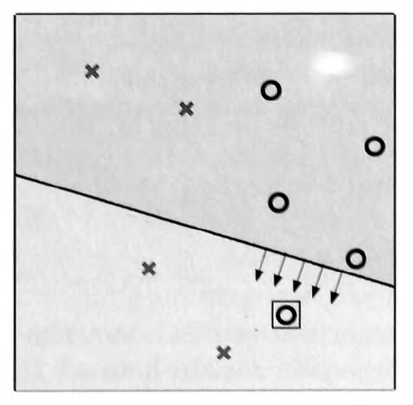
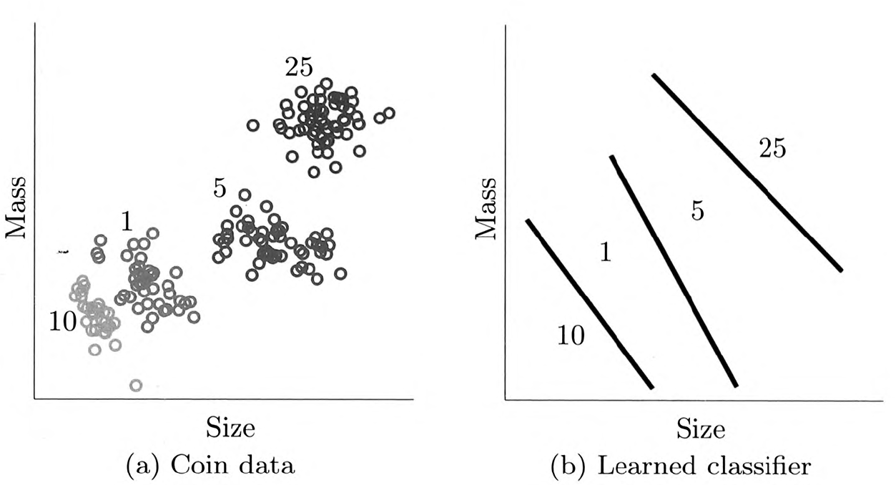
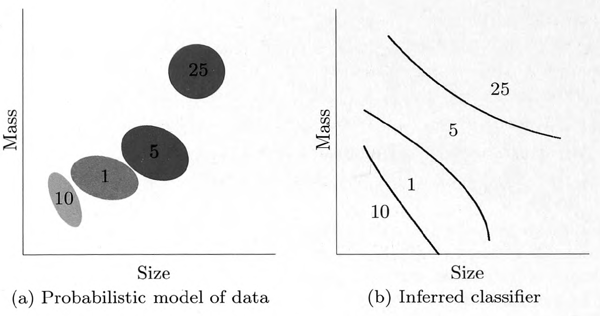
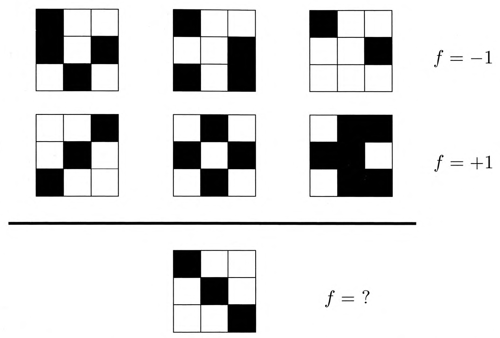
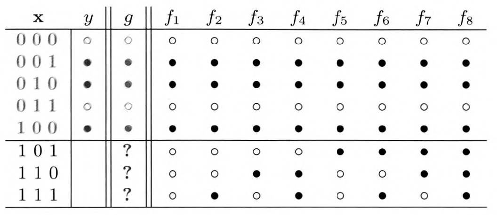
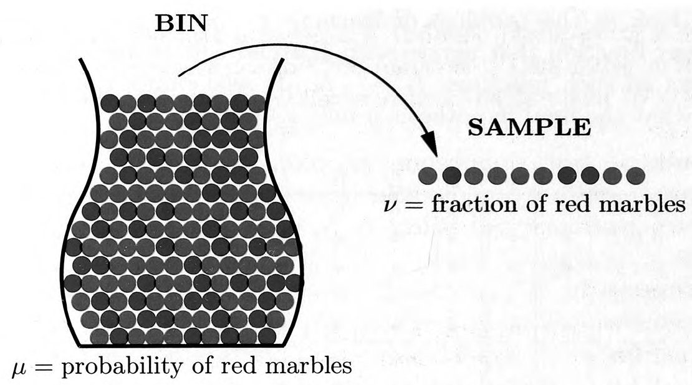

layout: true <div class="my-header"> <p class="align_left"></p> <p class="align_right"><b>Chapter 1 - The Learning Problem</b></p> </div> <div class="my-footer"> <p class="align_right"><b>2022.01.09 @ SYTEARK</b></p> <p class="align_left"><b>Tae Geun Kim</b></p> </div> --- class: center, middle # The Learning Problem <h4 style="color:brown">Part 1 of Chapter 1</h4> <h3 style="color: darkblue">Tae Geun Kim</h3> --- ## Table of Contents -- * Learning from Data -- * A Simple Learning Model - Perceptron -- * Learning versus Design -- * Types of Learning -- * Is Learning Feasible? --- class: center, middle # Learning from Data --- class: split-40 ### A tree .left-column[ <div id="boxshadow" style="width:90%"> <img src="images/tree.jpg" alt="simple" style="width:100%"/> <figcaption style="text-align: center;"><b>Fig.1</b> A tree</figcaption> </div> ] -- .right-column[ .center[ **Q. Is there a tree?** ] ] -- .right-column[ .center[ **A. Yes.** ] ] -- .right-column[ .center[ **Q. What is the definition of a tree?** ] ] -- .right-column[ .center[ **A. (Some inconclusive answers)** ] ] -- .right-column[ .center[ It is because we learned it by looking at trees. ] ] -- .right-column[ .center[ In other words, we learned from **data**. ] ] --- ### Netflix @ 2006 <div id="boxshadow" style="width:100%"> <figcaption style="text-align: center;"><b>Fig.2</b> Netflix Prize</figcaption> </div> --- ### Netflix @ 2006 * Winner takes all : $1,000,000 * It can only be received when there is 10% improvement. -- .center[ <div id="boxshadow" style="width:100%">  <figcaption style="text-align: center;"><b>Fig.3</b> A model for how a viewer rates a movie</figcaption> </div> ] --- class: split-50 ### Components of Learning .left-column[ **Metaphor**: Credit approval <div id="boxshadow" style="width:95%">  <figcaption style="text-align: center;"><b>Fig.4</b> Applicant information</figcaption> </div> .center[ Approve credit? ] ] -- .right-column[ * Input: $\mathbf{x}$ (Customer information) ] -- .right-column[ * Output: $y$ (good/bad customer?) ] -- .right-column[ * Target function: $f: \mathcal{X} \rightarrow \mathcal{Y}$ (ideal credit approval formula) ] -- .right-column[ * Data: $(\mathbf{x}_1, y_1),\,\cdots\,(\mathbf{x}_N, y_N)$ ] -- .right-column[ * Hypothesis set: $\mathcal{H}$ s.t. $h \in \mathcal{H}$ where $h: \mathcal{X} \rightarrow \mathcal{Y}$ ] -- .right-column[ * Final hypothesis: $g: \mathcal{X} \rightarrow \mathcal{Y}$ ] --- ### Components of Learning .center[ <div id="boxshadow" style="width:100%">  <figcaption style="text-align: center;"><b>Fig.5</b> Basic setup of the learning problem</figcaption> </div> ] --- class: center, middle # A Simple Learning Model - Perceptron --- ### A simple hypothesis set - the perceptron * Input space : $~\mathcal{X} = \mathbb{R}^d$ * Output space: $~\mathcal{Y} = \left\\{ -1,\,1 \right\\}$ * Hypothesis: $$ h(\mathbf{x}) = \begin{cases} +1&\text{ if } \displaystyle \sum\_{i=1}^d w\_i x\_i > \text{threshold} \\\\ -1&\text{ if } \displaystyle \sum\_{i=1}^d w\_i x\_i < \text{threshold} \end{cases} $$ -- .center[ can rewrite this as: ] -- $$ {\color{red}h}(\mathbf{x}) = \text{sign}\left\\{ \left(\sum\_{i=1}^d \color{red}{w\_i} x\_i \right) - \color{red}{\text{thresold}}\right \\} $$ --- ### A simple hypothesis set - the perceptron If we denote $\text{thresold}$ as $w_0$ & $x_0 = 1$, then -- $$ {\color{red}h}(\mathbf{x}) = \text{sign}\left(\sum\_{i=0}^d \color{red}{w\_i} x\_i \right) $$ -- In a vector form, $$ \color{red}{h}(\mathbf{x}) = \text{sign}(\color{red}{\mathbf{w}}^T \mathbf{x}) \\\\ \text{where }~ \mathbf{w} = [w_0,\cdots,w_d]^T,~~\mathbf{x} = [1,x_1,\cdots,x_d]^T $$ -- The corresponding hypothesis set is $$ \mathcal{H} = \left\\{ h\_\mathbf{w} \,|\, \mathbf{w} \in \mathbb{R}^{d+1} \right\\} $$ -- This model of $\mathcal{H}$ is called the **perceptron**. --- ### A simple learning algorithm - PLA **Q. How to determine which hypothesis is the best?** -- A. For perceptron, there is the algorithm - *Perceptron Learning Algorithm (PLA)*. -- .center[ <div class="animated-border-quote" style="width:100%"> <blockquote style="width:80%"> <p>At iteration $t$, where $t = 0,1,2,\cdots$</p> <ul> <li>$\mathbf{w}(t)$: a current value of the weight vector</li> <li>$(\mathbf{x}(t),y(t))$: a random picked misclassified data $$ y(t) \neq \text{sign}(\mathbf{w}^T \mathbf{x}(t)) $$ </li> <li>Update $\mathbf{w}(t)$ with following rule: $$ \mathbf{w}(t+1) = \mathbf{w}(t) + y(t) \mathbf{x}(t) $$ </li> </ul> </blockquote> </div> ] --- ### A simple learning algorithm - PLA **Q. Why does PLA work?** -- .center[ <div class="animated-border-quote" style="width:100%"> <blockquote style="width:80%"> <p><b>Exercise 1.3</b></p> <p style="text-align:left"> The weight update rule in previous slide has the nice interpretation that it moves in the direction of classifying $\mathbf{x}(t)$ correctly. <ol> <li>Show that $~y(t) \mathbf{w}^T(t)\mathbf{x}(t) < 0$.</li> <li>Show that $~y(t) \mathbf{w}^T(t+1)\mathbf{x}(t) > y(t) \mathbf{w}^T(t)\mathbf{x}(t)$.</li> <li>As far as classifying $\mathbf{x}(t)$ is concerned, argue that the move from $\mathbf{w}(t)$ to $\mathbf{w}(t+1)$ is a move <i>in the right direction</i>. </ol> </p> </blockquote> </div> ] -- **Q. Can PLA converge?** -- $~~\Rightarrow~$ Problem 1.3 (Homework) --- class: split-50 ### Significance of Perceptron .left-column[ .center[ <div id="boxshadow" style="width:90%">  <figcaption style="text-align:center";><b>Fig.6</b> PLA</figcaption> </div> ] ] -- .right-column[ * Within the infinite space of all weight vectors, the perceptron algorithm manages to find a weight vector that works, using a simple iterative process. ] -- .right-column[ * This illustrates how a learning algorithm can effectively search an infinite hypothesis set using a finite number of simple steps. ] -- .right-column[ * This feature is characteristics of many techniques that are used in learning, some of which are far more sophisticated than the perceptron. ] --- class: center, middle # Learning versus Design --- ### Learning .center[ <div id="boxshadow" style="width: 100%;">  <figcaption style="text-align:center";><b>Fig.7</b> The learning approach to coin classification</figcaption> </div> ] --- ### Design .center[ <div id="boxshadow" style="width: 100%;">  <figcaption style="text-align:center";><b>Fig.8</b> The design approach to coin classification</figcaption> </div> ] --- ### Learning vs Design .center[ <div class="animated-border-quote" style="width:100%"> <blockquote style="width:90%"> <p><b>Exercise 1.5</b></p> <p style="text-align:left"> Which of the following problems are more suited for the learning approach and which are more suited for the design approach? </p> <ol> <li>Determining the age at which a particular medical test should be performed.</li> <li>Classifying numbers into primes and non-primes.</li> <li>Detecting potential fraud in credit card charges.</li> <li>Determining the time it would take a falling object to hit the ground.</li> <li>Determining the optimal cycle for traffic lights in a busy intersection.</li> </ol> </blockquote> </div> ] --- class: center, middle # Types of Learning --- ### Types of Learning There are three types of learning: -- * **Supervised learning** -- * **Reinforcement learning** -- * **Unsupervised learning** -- If you want to detail, then read the 1.2 section of LFD. --- ### Types of Learning .center[ <div class="animated-border-quote" style="width:100%"> <blockquote style="width:90%"> <p><b>Exercise 1.6</b></p> <p style="text-align: left;"> For each of the following tasks, identify which type fo learning is involved (supervised, reinforcement, or unsupervised) and the training data to be used. If a task can fit more than one type, explain how and describe the training data for each type. </p> <ol> <li>Recommending a book to a user in an online bookstore.</li> <li>Playing tic-tac-toe.</li> <li>Categorizing movies into different types.</li> <li>Learning to play music.</li> <li>Credit limit: Deciding the maximum allowed debt for each bank customer.</li> </ol> </blockquote> </div> ] --- class: center, middle # Is Learning Feasible? --- ### Is Learning Feasible? * Our goal is to approximate the target function $f(x)$. -- * But the target function is *unknown*. -- **Q. How could a limited data set reveal enough information to pin down the entire target function?** --- ### Is Learning Feasible? **Q. How could a limited data set reveal enough information to pin down the entire target function?** .center[ <div id="boxshadow" style="width:100%">  <figcaption style="text-align:center";><b>Fig.9</b> A visual learning problem.</figcaption> </div> ] --- ### Outside the Data Set * When we get the training data $\mathcal{D}$, we know the value of $f$ on all the points in $\mathcal{D}$. -- * But it doesn't mean that we have learned $f$, since it doesn't guarantee that we know anything about $f$ outside of $\mathcal{D}$. -- **Q. Does the data set $\mathcal{D}$ tell us anything outside of $\mathcal{D}$ that we didn't know before?** -- * If answer is yes, then we have learned *something*. * If answer is no, we can conclude that learning is not feasible. --- ### Outside the Data Set .center[ <div id="boxshadow" style="width:100%">  <figcaption style="text-align:center";><b>Fig.10</b> Which should be the final hypothesis?</figcaption> </div> ] -- As long as $f$ is an unknown function, knowing $\mathcal{D}$ cannot exclude any pattern of values for $f$ outside of $\mathcal{D}$. -- Thus, the predictions of $g$ outside of $\mathcal{D}$ are meaningless. -- But there is the **probability**. --- ### Probability to the Rescue .center[ <div id="boxshadow" style="width:100%">  <figcaption style="text-align:center";><b>Fig.11</b> A random sample is picked from a bin of red and green marbles.</figcaption> </div> ] --- ### Probability to the Rescue .center[ <div class="animated-border-quote" style="width:100%"> <blockquote style="width:80%"> <p><b>Exercise 1.8</b></p> <p style="text-align:left"> If $\mu=0.9$, what is the probability that a sample of 10 marbles will have $\nu \leq 0.1$? [Hints: 1. Use binomial distribution. 2. The answer is a very small number.] </p> </blockquote> </div> ] --- ### References * Y. S. Abu-Mostafa, M. Magdon-Ismail, and H.-T. Lin, *Learning from data: A short course*. Seattle: AMLbook.com, 2012. --- class: center, middle # Thank you!